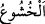
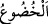
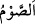

“Tâate devam eden erkekler ve tâate devam eden kadınlar” et-Te’vîlâtü’n-
Necmiyye’de: “ varlığın tâat ve kullukta müstağrak olmasıdır” denilmiştir.
Söz, amel ve niyette “doğru erkekler ve doğru kadınlar” et-Te’vîlât’ta der ki: “Onlar
akidlerinde, ahidlerinde/sözlerinde, sınırlara riâyet etmede sâdıktırlar.” Sıdk, Rablerine
yakınlıklarına göre sıddîkların kalplerine hediye edilen nurdur.
Tâatlere devama ve ma‘sıyetleri terke “sabreden erkekler ve sabreden kadınlar,” et-
Te’vîlât’ta der ki: “Onlar güzel hasletlerde devama, yerilmiş sıfatlardan uzak durmaya,
kazâ ve kaderin tecellîsine, belâların inmesine sabredenlerdir.”
Allah için kalpleri ve uzuvlarıyla tevazu gösteren “mütevâzi erkekler ve mütevâzi
kadınlar” et-Te’vîlât’ta der ki: “ (huşû)”, hakikat peşpeşe vârid olunca gönlün
susup sessiz kalmasıdır.” Bâzıları şöyle demiştir. “ (huşû)”, bâtının Hakk’a boyun
eğmesi, “ (hudû‘)” ise zâhirin Hakk’a boyun eğmesidir. el-Kâmûs’ta der ki:
“Huşû; hudû, yâni tevâzu ve sükûnet demektir. Yahut hudû bedende, huşû ise seste olur.”
“Sadaka veren erkekler ve sadaka veren kadınlar,” mallarının içinde verilmesi farz
olanı tasadduk edenler veya farz olsun nâfile olsun sadakaları verenler, demektir.
Sadaka, kendisiyle Allah Teâlâ’dan sevab beklenilen ihsan ve iyiliktir. el-Müfredât’ta
der ki: “Sadaka, zekât gibi insanın Allâh’a yakınlık maksadıyla malından çıkarıp
verdiği mala denir. Fakat aslında sadaka, nâfile olarak verilene, zekât ise farz olarak
verilene denir. Farz olanı (zekâtı) veren kişi fiilinde sıdkı elde etmeye çalışıyorsa o
zaman farz olan zekâta “sadaka” adı verileceği de söylenmiştir.
et-Te’vîlâtü’n-Necmiyye’de der ki: “Kendilerinden elde ettikleri konusunda kimseyle
aralarında hasımlık olmaması için mallarını ve fânî varlıklarını sadaka olarak veren
erkekler ve sadaka olarak veren kadınlar.”
Sadakanın hakîkati, taleb erbâbına/tâliblere hâllerle verilen sadakadır. Hâfız der ki:
Ey kerâmet sâhibi! Selâmette oluşuna şükür olarak,
Azıksız dervişin bir gün hatırını sor!
Farz veya nâfile olsun mutlak olarak “oruç tutan erkekler ve oruç tutan kadınlar,”
et-Te’vîlât’ta şöyle der: “Yâni kendilerini şerîatta ve tarîkatta kalben ve bedenen
yapılması câiz olmayan şeylerden tutanlar. Kalıp/beden kendini şehvetlerden geri
tutarak oruç tutar. Kalp ise mânevî dereceleri ve Hakk’a yakınlıkları görmekten (onlara
takılıp kalmaktan) kendini tutmakla oruç tutar.
el-Müfredât’ta şöyle denilmiştir: “ (oruç)” aslında yemek, konuşmak veya
yürümek gibi herhangi bir fiilden geri durmak, onu yapmamaktır (imsâk). Şerîatta ise
mükellefin niyetle beraber tan yerinin ağarmasından (güneş batana kadar) yemek, içmek,
cinsî münâsebet, istimnâ ve kendi isteğiyle ağız dolusu kusmaktan geri
durması/kendisini tutmasıdır.
Zâhirde haramdan, hakîkatte mükevvenâtın tasarruflarından “ırzlarını koruyan